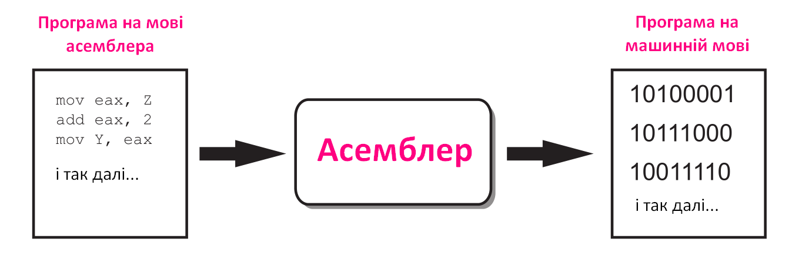

Від машинної мови до високого рівня
Процесор є найважливішим компонентом в комп’ютері. Одна з основних функцій процесора - це обробка даних згідно комп’ютерної програми, яка є списком інструкцій, шляхом виконання арифметичних і логічних операцій над фрагментами даних.
Кожна інструкція в програмі - це команда, яка «повідомляє» процесору, яку операцію він повинен виконати. Ось приклад інструкції, яка може бути присутня в програмі
10111010
Для нас - це лише послідовність 0 і 1. Однак для процесора - це інструкція виконати певну операцію. Процесор комп’ютера може розуміти лише ті інструкції, які написані на машинній мові.
Машинна мова - це штучна мова, створена для передачі команд комп’ютеру. За допомогою машинної мови створюються ефективні програми, оскільки розробник отримує доступ до всіх можливостей процесора. Машинна мова - мова низького рівня.
Інструкція машинної мови існує для кожної операції, яку процесор здатний виконати - є інструкція для додавання чисел, є інструкція для віднімання чисел і т. д.
Увесь набір інструкцій, який центральний процесор може виконати, відомий як набір інструкцій процесора.
Наприклад, у вас є певна програма, яка зберігається на диску вашого комп’ютера. Для виконання програми, ви здійснюєте подвійний клік на значку програми. Це змушує програму копіюватися з диска в оперативну пам’ять, після чого процесор комп’ютера виконує копію програми, яка знаходиться в оперативній пам’яті.
Коли процесор виконує інструкції програми, він бере участь у процесі, який є відомим як цикл fetch - decode - execute (отримати - декодувати - виконати). Цей цикл виконується для кожної інструкції у програмі і складається з трьох кроків:
Програма - це послідовність інструкцій на машинній мові. Першим кроком циклу є завантаження (отримання) наступної інструкції з пам’яті в процесор.
ДекодуватиІнструкція машинної мови - це двійкове число, яке представляє команду, що повідомляє процесору виконати певну операцію. На цьому кроці процесор декодує інструкцію, яку було «витягнуто» з пам’яті, для визначення того, яка операція повинна виконуватись.
ВиконатиОстанній крок циклу - виконати операцію.
Хоча процесор комп’ютера розуміє тільки машинну мову, людині непрактично писати програми на машинній мові. Така програма може мати тисячі або навіть мільйони бінарних інструкцій, і написання такої програми буде дуже обтяжливим процесом. З цієї причини була створена мова асемблера як альтернатива машинній мові. Замість використання двійкових чисел для написання інструкцій, мова асемблера використовує короткі слова, відомі як мнемокоди. Наприклад, на мові асемблера, мнемокод add, як правило, означає, що потрібно додати числа, а mul, як правило, означає, множення чисел, а mov, як правило, означає переміщення значення у певне місце в пам’яті. Знову ж таки, процесор «розуміє» лише машинну мову, тому спеціальна програма, відома як Асемблер, використовується для збірки програми у програму на машинній мові. Цей процес можна проілюструвати так:
Незважаючи на те, що мова асемблера не вимагає двійкових інструкцій, як у випадку машинної мови, проте вона вимагає високих знань про процесор. Використовуючи мову асемблера, навіть для найпростішої програми, необхідно написати велику кількість інструкцій.
Оскільки мова асемблера близька за своєю природою до машинної мови, вона є мовою низького рівня.
Мова програмування високого рівня дозволяє створювати cкладні програми, не знаючи, як працює процесор, і не записуючи великої кількості інструкцій низького рівня. Крім того, більшість мов програмування високого рівня використовують слова, які легко зрозуміти.
Python - одна із популярних сучасних мов програмування високого рівня.
Наприклад, у Python для відображення повідомлення Hello, World! необхідно записати наступну інструкцію:
print('Hello, World!')
section .text
global _start
_start:
mov edx, len
mov ecx, msg
mov ebx, 1
mov eax, 4
int 0x80
mov eax, 1
int 0x80
section .data
msg db 'Hello, World!',0xa
len equ $ - msg